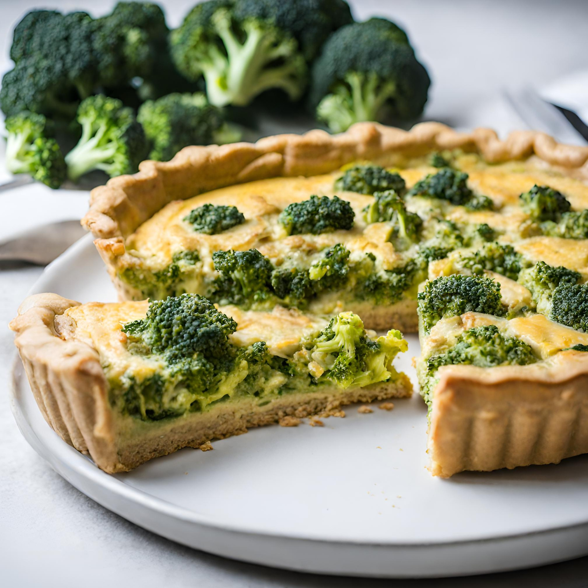

Alguém tem uma receita vegana deliciosa para compartilhar? Estou
procurando por algo novo e saboroso para experimentar hoje à noite.
Aceito sugestões de pratos principais ou sobremesas!

Olhem só essa quiche vegana de brócolis que preparei hoje! Ficou
simplesmente incrível, com uma textura cremosa e um sabor
delicioso de brócolis fresco. É uma opção perfeita para um almoço
leve e nutritivo. Quem quer a receita?
Você sabia que a quinoa é considerada um superalimento? Além de ser
uma excelente fonte de proteína vegetal, ela também é rica em
fibras, vitaminas e minerais essenciais. Que tal experimentar uma
deliciosa salada de quinoa hoje?

 Bruna
Bruna